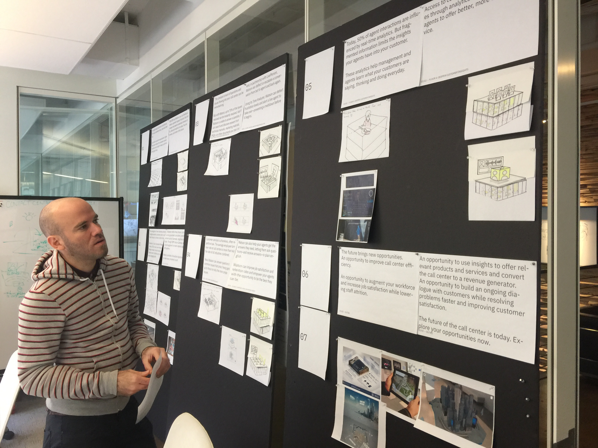
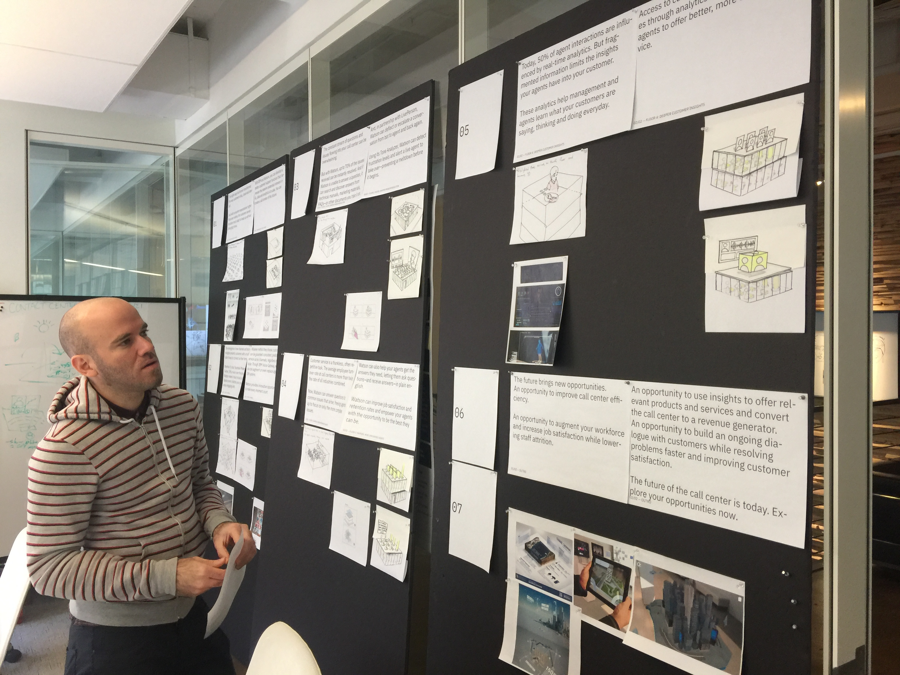

The Challenge
Early prototypes exposed two related issues. The first issue was a combination of the limitations of the augmented reality environment and our target audience's expectations. While our viewer did not seek out or invest in this experience, the AR environment asks the user to be an active participant.
The second issue was the inability to iterate on prototypes quickly within the 3D pipeline. This limited our ability to create a compelling experience.
 

Solutions
The first issue was minimized in two ways. First, by creating an experience that took the passive user into account. Second, by creating a presentation that entices the user's interaction.
The second issue required a fundamental shift in the design process. I built the experience in cardboard. With cardboard, masking tape and, markers we were able to prototype and effect changes in real time, quickly getting to an evocative experience.